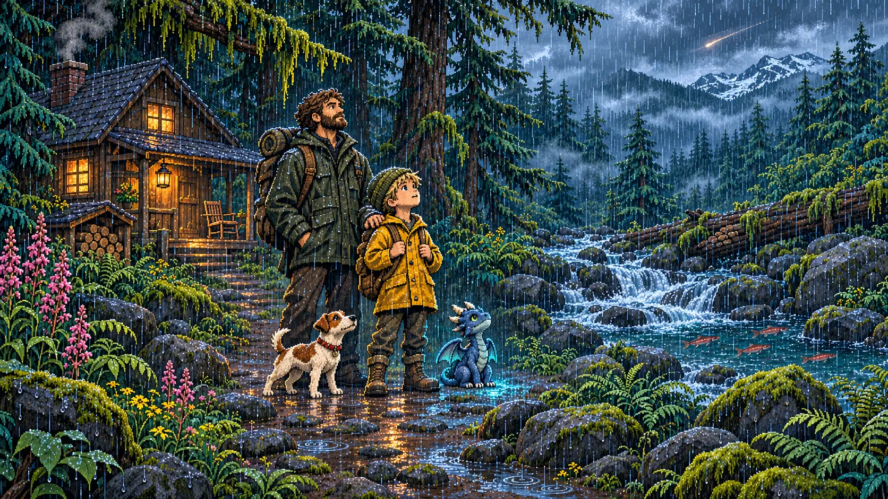
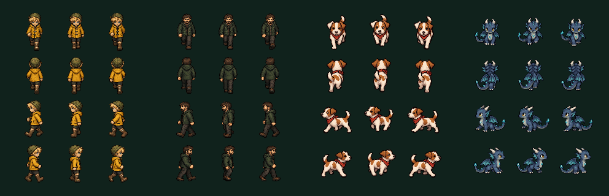
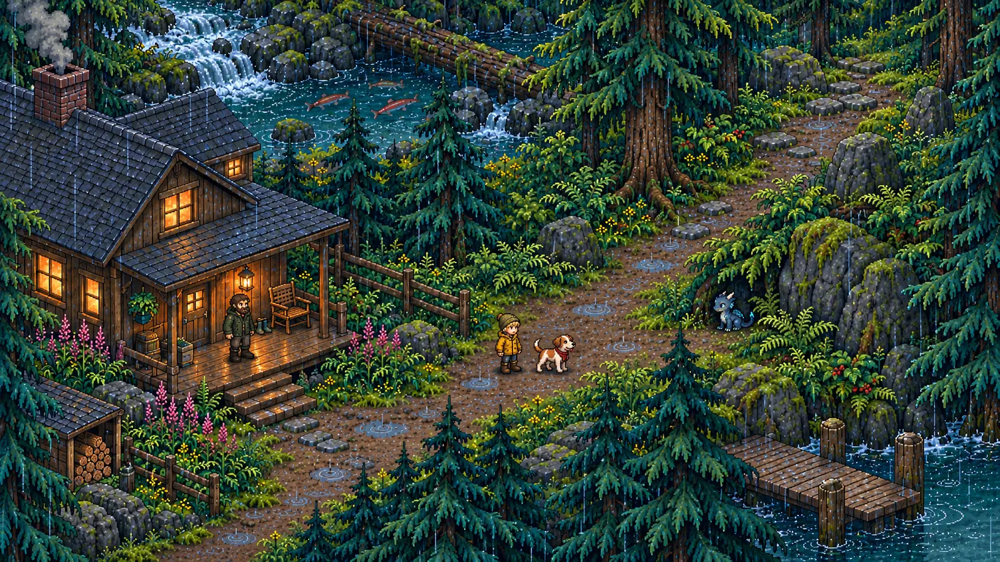
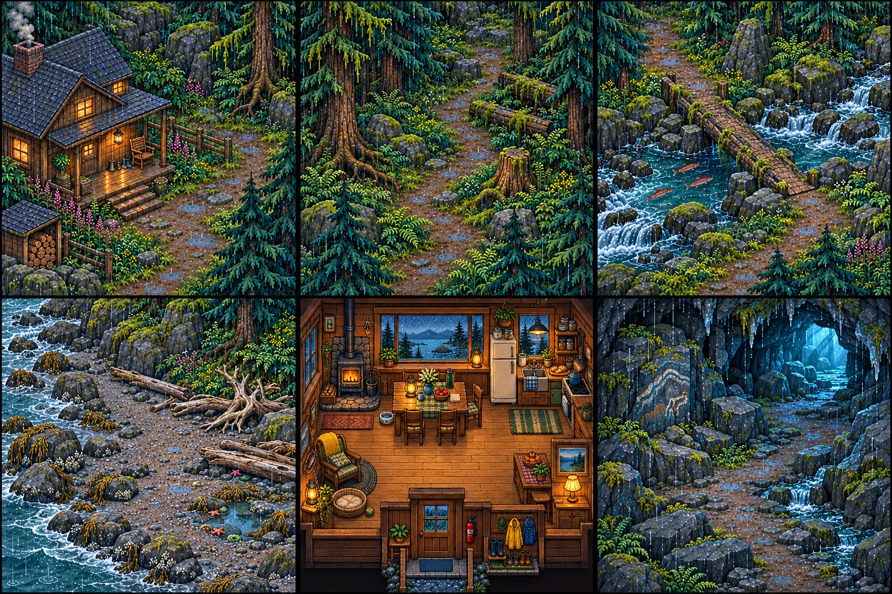

Studio LaDuke · Chapter One production reference
HEIMR VISUAL SYSTEM
One scale, one camera, one wet Southeast Alaska world.
VERSION 1 · PLAYABLE SOURCE LOCKED

Promotional mood reference. Character relationships are locked; gameplay scale is defined below.
Playable character master

Maverick · 60 pxChild protagonist. Normal anatomy; never giant-headed.
Dad · 74 pxAdult anchor. 23% taller at the same ground scale.
Finn · 48 pxLow, quick trail companion with a readable trot.
Heimr · 52 pxSmall hatchling scale for Chapter One protection and trust.
Gameplay translation

Target: playable paths, visible collision edges, layered foregrounds and readable rain.

Porch, deep forest, crossing, shore, home and future discovery-space language.
Restricted world palette
Reusable environment motifs
These are named crops from the shipped master worlds. Each motif carries separate collision and depth semantics so the picture and the physical world remain aligned.
Production rules
Ground scale winsFeet, paws and shadows share one world plane. Promotional art never overrides runtime proportions.
Visible blocker = physical blockerTrunks, rocks, walls, water and dense brush require matching collision geometry.
Depth is authoredForeground canopies, porch posts and rock faces join the actor Y-sort instead of behaving like wallpaper.
Abilities change the worldAlder, bushes, rocks, bridges and caches have explicit locked and unlocked visual states.
Rain stays readableCool ambient light and wet highlights add atmosphere without crushing characters into darkness.
No sword defaultThreats are answered through light, tools, movement, companions and story-specific abilities.